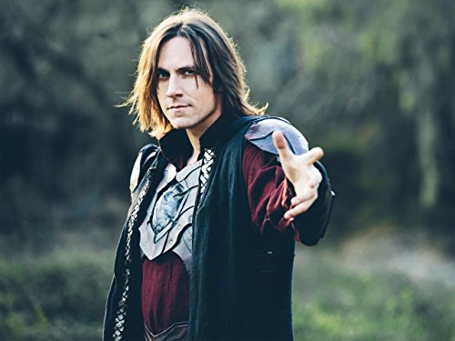

Adventurers! My name is Matt, and no not the Matt that is pictured to the right. But I've had the privilege of being a Dungeon Master for the past 8 years. Over that time, I've designed and crafted my own fantasy world, known as Khorvaguad—a land filled with ancient mysteries, powerful magic, and countless dangers. Whether you’re a seasoned explorer or new to the realm, I’m here to guide you through epic tales and unforgettable quests. So gather your courage, sharpen your blades, and prepare to embark on an adventure like no other. The world of Khorvaguad awaits!
